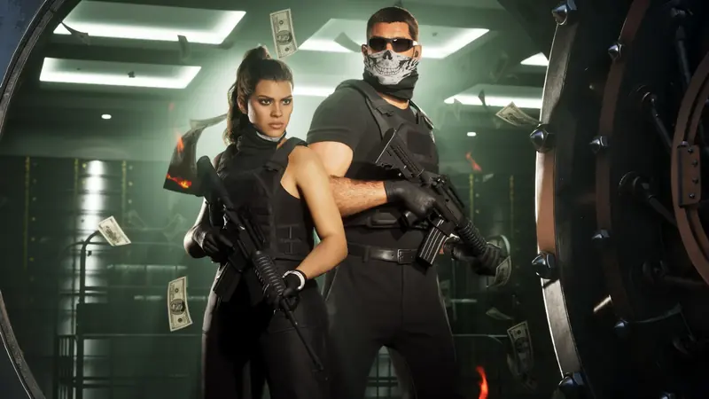
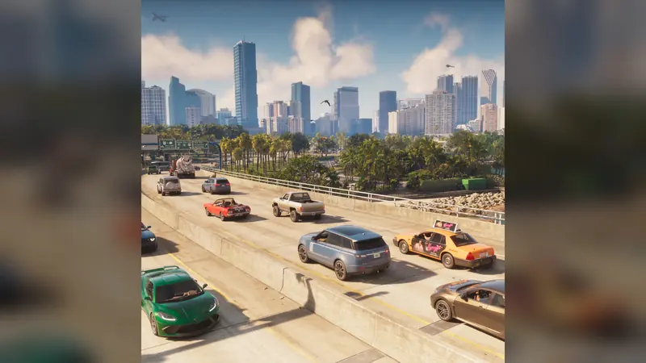
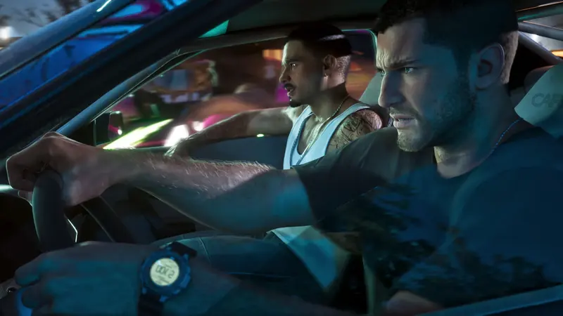

GTA 6 Ratgeber
Alles, was du zum Start von GTA VI wissen musst, kompakt auf je einer Seite. Wie im Liveticker trägt jede Angabe einen Stempel: Offiziell, Berichtet oder Offen, mit Link zur Quelle.
GTA 6 Release in Deutschland: alles Wichtige
GTA 6 erscheint am 19. November 2026. Uhrzeit in Deutschland, Preise, Editionen, Vorab-Download, USK und PC-Version, jede Angabe mit Quelle.
GTA 6 vorab laden: wann, wie groß, wie
GTA 6 Vorab-Download ab 10. November: PS5 ab Mitternacht, Xbox ab 1 Uhr deutscher Zeit. Bis zu 212 GB, so machst du Platz. Mit Quellen.
GTA 6 Editionen im Vergleich
GTA 6 Standard für 79,99 € oder Ultimate Edition für 99,99 €? Alle Inhalte der Ultimate Edition, das Vintage Vice City Pack und GTA+, mit Quellen.
GTA 6 und die USK: ab 18
GTA 6 hat in Deutschland keine Jugendfreigabe (USK ab 18). Was das beim Kauf bedeutet, PEGI und ESRB im Vergleich, deutsche Sprache. Mit Quellen.

GTA 6 Charaktere: wer ist wer?
Alle bekannten GTA 6 Charaktere: Jason Duval, Lucia Caminos und sechs Nebenfiguren mit Steckbrief, dazu was über Beziehung und Story bekannt ist. Mit Quellen.
GTA 6 Karte: Leonida und seine Regionen
Wie groß ist die GTA 6 Karte? Leonida, Vice City und alle sechs Regionen, Tiere, Wetter und Hurrikane. Nur Bestätigtes, mit Quellen.

GTA 6 Musik: Album, Radio und Filmmusik
GTA 6 Soundtrack: The Album mit 34 Songs am 19. November, Filmmusik von Justice am 11. Dezember, alle bekannten Singles und Radiosender. Mit Quellen.

Kommt GTA 6 für den PC?
GTA 6 PC: Rockstar hat noch keine PC-Version angekündigt. Was Berichte sagen (Anfang 2027), was Xbox dementiert hat und was du jetzt tun kannst.